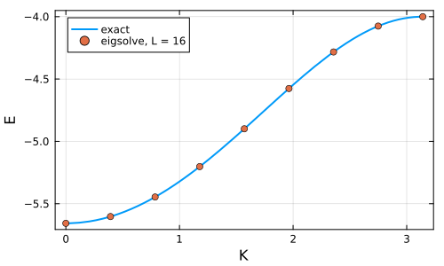

Bound doublons in the Hubbard ring
Two fermions with opposite spin on a Hubbard ring with attractive interaction U < 0 form a bound pair, a doublon. Its energy at total momentum K is known exactly. We find it numerically with KrylovKit, acting with the symbolic Hamiltonian directly on symbolic states, without ever building a basis or a matrix for the full Hilbert space.
using FermionicHilbertSpaces, KrylovKit, LinearAlgebra, Plotsusing FermionicHilbertSpaces.NonCommutativeProducts: termsA ring of L sites with spin has 2L fermionic modes. The Hilbert space is only described, not enumerated.
@fermions cL = 16H = hilbert_space(c, [(j, s) for j in 1:L for s in (:↑, :↓)])dim(H)4294967296The Hubbard Hamiltonian with periodic boundary conditions.
t, U = 1.0, -4.0ham = sum(-t * c[j, s]' * c[mod1(j + 1, L), s] + hc for j in 1:L for s in (:↑, :↓)) + U * sum(c[j, :↑]' * c[j, :↑] * c[j, :↓]' * c[j, :↓] for j in 1:L)Sum with 80 terms:
-c†[1, :↑]*c[16, :↑]-c†[1, :↑]*c[2, :↑]-c†[1, :↓]*c[16, :↓] + ...A doublon with momentum K is a superposition of a spin-up and a spin-down fermion sitting on the same site.
vac = Ket("0"^(2L), H)doublon(K) = sum(cis(K * j) * c[j, :↑]' * c[j, :↓]' * vac for j in 1:L) / sqrt(L)doublon (generic function with 1 method)The Hamiltonian conserves particle number and momentum, so the Krylov space generated from doublon(K) stays in the two-particle sector with momentum K. The lowest eigenvalue there is the bound state. eigsolve takes the symbolic Hamiltonian as the linear map and symbolic states as vectors. With eager=true it stops as soon as the eigenvalue has converged, before rounding errors can pull in states with other momenta.
function bound_state(K) vals, vecs, info = eigsolve(ham, doublon(K), 1, :SR; ishermitian=true, eager=true) return vals[1], vecs[1]endE0, ψ0 = bound_state(0.0)(-5.656858497224624, -0.0003643340879420149*Ket(|00000…⟩) - 0.0003643340879420149*Ket(|00000…⟩) - 0.0003643340879420149*Ket(|00000…⟩) - 0.0003643340879420149*Ket(|00000…⟩) - 0.0003643340879420149*Ket(|00000…⟩) - 0.0003643340879420149*Ket(|00000…⟩) - 0.0003643340879420149*Ket(|00010…⟩) - 0.0003643340879420149*Ket(|01000…⟩) - 0.0005152465953008416*Ket(|00000…⟩) - 0.0005152465953008416*Ket(|00000…⟩) - 0.0005152465953008416*Ket(|00000…⟩) - 0.0005152465953008416*Ket(|00000…⟩) - 0.0005152465953008416*Ket(|00000…⟩) - 0.0005152465953008416*Ket(|00000…⟩) - 0.0005152465953008416*Ket(|00000…⟩) - 0.0005152465953008416*Ket(|00000…⟩) - 0.0005152465953008416*Ket(|00000…⟩) - 0.0005152465953008416*Ket(|00000…⟩) - 0.0005152465953008416*Ket(|00000…⟩) - 0.0005152465953008416*Ket(|00000…⟩) - 0.0005152465953008416*Ket(|00010…⟩) - 0.0005152465953008416*Ket(|00010…⟩) - 0.0005152465953008416*Ket(|01000…⟩) - 0.0005152465953008416*Ket(|01000…⟩) - 0.0010930044524547992*Ket(|00000…⟩) - 0.0010930044524547992*Ket(|00000…⟩) - 0.0010930044524547992*Ket(|00000…⟩) - 0.0010930044524547992*Ket(|00000…⟩) - 0.0010930044524547992*Ket(|00000…⟩) - 0.0010930044524547992*Ket(|00000…⟩) - 0.0010930044524547992*Ket(|00000…⟩) - 0.0010930044524547992*Ket(|00000…⟩) - 0.0010930044524547992*Ket(|00000…⟩) - 0.0010930044524547992*Ket(|00000…⟩) - 0.0010930044524547992*Ket(|00000…⟩) - 0.0010930044524547992*Ket(|00000…⟩) - 0.0010930044524547992*Ket(|00010…⟩) - 0.0010930044524547992*Ket(|00010…⟩) - 0.0010930044524547992*Ket(|01000…⟩) - 0.0010930044524547992*Ket(|01000…⟩) - 0.0025762391668857957*Ket(|00000…⟩) - 0.0025762391668857957*Ket(|00000…⟩) - 0.0025762391668857957*Ket(|00000…⟩) - 0.0025762391668857957*Ket(|00000…⟩) - 0.0025762391668857957*Ket(|00000…⟩) - 0.0025762391668857957*Ket(|00000…⟩) - 0.0025762391668857957*Ket(|00000…⟩) - 0.0025762391668857957*Ket(|00000…⟩) - 0.0025762391668857957*Ket(|00000…⟩) - 0.0025762391668857957*Ket(|00000…⟩) - 0.0025762391668857957*Ket(|00000…⟩) - 0.0025762391668857957*Ket(|00000…⟩) - 0.0025762391668857957*Ket(|00010…⟩) - 0.0025762391668857957*Ket(|00010…⟩) - 0.0025762391668857957*Ket(|01000…⟩) - 0.0025762391668857957*Ket(|01000…⟩) - 0.006193705758585618*Ket(|00000…⟩) - 0.006193705758585618*Ket(|00000…⟩) - 0.006193705758585618*Ket(|00000…⟩) - 0.006193705758585618*Ket(|00000…⟩) - 0.006193705758585618*Ket(|00000…⟩) - 0.006193705758585618*Ket(|00000…⟩) - 0.006193705758585618*Ket(|00000…⟩) - 0.006193705758585618*Ket(|00000…⟩) - 0.006193705758585618*Ket(|00000…⟩) - 0.006193705758585618*Ket(|00000…⟩) - 0.006193705758585618*Ket(|00000…⟩) - 0.006193705758585618*Ket(|00000…⟩) - 0.006193705758585618*Ket(|00010…⟩) - 0.006193705758585618*Ket(|00010…⟩) - 0.006193705758585618*Ket(|01000…⟩) - 0.006193705758585618*Ket(|01000…⟩) - 0.014942219357996304*Ket(|00000…⟩) - 0.014942219357996304*Ket(|00000…⟩) - 0.014942219357996304*Ket(|00000…⟩) - 0.014942219357996304*Ket(|00000…⟩) - 0.014942219357996304*Ket(|00000…⟩) - 0.014942219357996304*Ket(|00000…⟩) - 0.014942219357996304*Ket(|00000…⟩) - 0.014942219357996304*Ket(|00000…⟩) - 0.014942219357996304*Ket(|00000…⟩) - 0.014942219357996304*Ket(|00000…⟩) - 0.014942219357996304*Ket(|00000…⟩) - 0.014942219357996304*Ket(|00000…⟩) - 0.014942219357996304*Ket(|00010…⟩) - 0.014942219357996304*Ket(|00010…⟩) - 0.014942219357996304*Ket(|01000…⟩) - 0.014942219357996304*Ket(|01000…⟩) - 0.03606930451275232*Ket(|00000…⟩) - 0.03606930451275232*Ket(|00000…⟩) - 0.03606930451275232*Ket(|00000…⟩) - 0.03606930451275232*Ket(|00000…⟩) - 0.03606930451275232*Ket(|00000…⟩) - 0.03606930451275232*Ket(|00000…⟩) - 0.03606930451275232*Ket(|00000…⟩) - 0.03606930451275232*Ket(|00000…⟩) - 0.03606930451275232*Ket(|00000…⟩) - 0.03606930451275232*Ket(|00000…⟩) - 0.03606930451275232*Ket(|00000…⟩) - 0.03606930451275232*Ket(|00000…⟩) - 0.03606930451275232*Ket(|00010…⟩) - 0.03606930451275232*Ket(|00010…⟩) - 0.03606930451275232*Ket(|01000…⟩) - 0.03606930451275232*Ket(|01001⟩) - 0.08707725650297649*Ket(|00000…⟩) - 0.08707725650297649*Ket(|00000…⟩) - 0.08707725650297649*Ket(|00000…⟩) - 0.08707725650297649*Ket(|00000…⟩) - 0.08707725650297649*Ket(|00000…⟩) - 0.08707725650297649*Ket(|00000…⟩) - 0.08707725650297649*Ket(|00000…⟩) - 0.08707725650297649*Ket(|00000…⟩) - 0.08707725650297649*Ket(|00000…⟩) - 0.08707725650297649*Ket(|00000…⟩) - 0.08707725650297649*Ket(|00000…⟩) - 0.08707725650297649*Ket(|00000…⟩) - 0.08707725650297649*Ket(|00000…⟩) - 0.08707725650297649*Ket(|00011⟩) - 0.08707725650297649*Ket(|01000…⟩) - 0.08707725650297649*Ket(|011⟩) + 0.0003643340879420149*Ket(|00000…⟩) + 0.0003643340879420149*Ket(|00000…⟩) + 0.0003643340879420149*Ket(|00000…⟩) + 0.0003643340879420149*Ket(|00000…⟩) + 0.0003643340879420149*Ket(|00000…⟩) + 0.0003643340879420149*Ket(|00001…⟩) + 0.0003643340879420149*Ket(|00100…⟩) + 0.0003643340879420149*Ket(|10000…⟩) + 0.0005152465953008416*Ket(|00000…⟩) + 0.0005152465953008416*Ket(|00000…⟩) + 0.0005152465953008416*Ket(|00000…⟩) + 0.0005152465953008416*Ket(|00000…⟩) + 0.0005152465953008416*Ket(|00000…⟩) + 0.0005152465953008416*Ket(|00000…⟩) + 0.0005152465953008416*Ket(|00000…⟩) + 0.0005152465953008416*Ket(|00000…⟩) + 0.0005152465953008416*Ket(|00000…⟩) + 0.0005152465953008416*Ket(|00000…⟩) + 0.0005152465953008416*Ket(|00001…⟩) + 0.0005152465953008416*Ket(|00001…⟩) + 0.0005152465953008416*Ket(|00100…⟩) + 0.0005152465953008416*Ket(|00100…⟩) + 0.0005152465953008416*Ket(|10000…⟩) + 0.0005152465953008416*Ket(|10000…⟩) + 0.0010930044524547992*Ket(|00000…⟩) + 0.0010930044524547992*Ket(|00000…⟩) + 0.0010930044524547992*Ket(|00000…⟩) + 0.0010930044524547992*Ket(|00000…⟩) + 0.0010930044524547992*Ket(|00000…⟩) + 0.0010930044524547992*Ket(|00000…⟩) + 0.0010930044524547992*Ket(|00000…⟩) + 0.0010930044524547992*Ket(|00000…⟩) + 0.0010930044524547992*Ket(|00000…⟩) + 0.0010930044524547992*Ket(|00000…⟩) + 0.0010930044524547992*Ket(|00001…⟩) + 0.0010930044524547992*Ket(|00001…⟩) + 0.0010930044524547992*Ket(|00100…⟩) + 0.0010930044524547992*Ket(|00100…⟩) + 0.0010930044524547992*Ket(|10000…⟩) + 0.0010930044524547992*Ket(|10000…⟩) + 0.0025762391668857957*Ket(|00000…⟩) + 0.0025762391668857957*Ket(|00000…⟩) + 0.0025762391668857957*Ket(|00000…⟩) + 0.0025762391668857957*Ket(|00000…⟩) + 0.0025762391668857957*Ket(|00000…⟩) + 0.0025762391668857957*Ket(|00000…⟩) + 0.0025762391668857957*Ket(|00000…⟩) + 0.0025762391668857957*Ket(|00000…⟩) + 0.0025762391668857957*Ket(|00000…⟩) + 0.0025762391668857957*Ket(|00000…⟩) + 0.0025762391668857957*Ket(|00001…⟩) + 0.0025762391668857957*Ket(|00001…⟩) + 0.0025762391668857957*Ket(|00100…⟩) + 0.0025762391668857957*Ket(|00100…⟩) + 0.0025762391668857957*Ket(|10000…⟩) + 0.0025762391668857957*Ket(|10000…⟩) + 0.006193705758585618*Ket(|00000…⟩) + 0.006193705758585618*Ket(|00000…⟩) + 0.006193705758585618*Ket(|00000…⟩) + 0.006193705758585618*Ket(|00000…⟩) + 0.006193705758585618*Ket(|00000…⟩) + 0.006193705758585618*Ket(|00000…⟩) + 0.006193705758585618*Ket(|00000…⟩) + 0.006193705758585618*Ket(|00000…⟩) + 0.006193705758585618*Ket(|00000…⟩) + 0.006193705758585618*Ket(|00000…⟩) + 0.006193705758585618*Ket(|00001…⟩) + 0.006193705758585618*Ket(|00001…⟩) + 0.006193705758585618*Ket(|00100…⟩) + 0.006193705758585618*Ket(|00100…⟩) + 0.006193705758585618*Ket(|10000…⟩) + 0.006193705758585618*Ket(|10000…⟩) + 0.014942219357996304*Ket(|00000…⟩) + 0.014942219357996304*Ket(|00000…⟩) + 0.014942219357996304*Ket(|00000…⟩) + 0.014942219357996304*Ket(|00000…⟩) + 0.014942219357996304*Ket(|00000…⟩) + 0.014942219357996304*Ket(|00000…⟩) + 0.014942219357996304*Ket(|00000…⟩) + 0.014942219357996304*Ket(|00000…⟩) + 0.014942219357996304*Ket(|00000…⟩) + 0.014942219357996304*Ket(|00000…⟩) + 0.014942219357996304*Ket(|00001…⟩) + 0.014942219357996304*Ket(|00001…⟩) + 0.014942219357996304*Ket(|00100…⟩) + 0.014942219357996304*Ket(|00100…⟩) + 0.014942219357996304*Ket(|10000…⟩) + 0.014942219357996304*Ket(|10000…⟩) + 0.03606930451275232*Ket(|00000…⟩) + 0.03606930451275232*Ket(|00000…⟩) + 0.03606930451275232*Ket(|00000…⟩) + 0.03606930451275232*Ket(|00000…⟩) + 0.03606930451275232*Ket(|00000…⟩) + 0.03606930451275232*Ket(|00000…⟩) + 0.03606930451275232*Ket(|00000…⟩) + 0.03606930451275232*Ket(|00000…⟩) + 0.03606930451275232*Ket(|00000…⟩) + 0.03606930451275232*Ket(|00000…⟩) + 0.03606930451275232*Ket(|00000…⟩) + 0.03606930451275232*Ket(|00001…⟩) + 0.03606930451275232*Ket(|00100…⟩) + 0.03606930451275232*Ket(|00100…⟩) + 0.03606930451275232*Ket(|10000…⟩) + 0.03606930451275232*Ket(|10000…⟩) + 0.08707725650297649*Ket(|00000…⟩) + 0.08707725650297649*Ket(|00000…⟩) + 0.08707725650297649*Ket(|00000…⟩) + 0.08707725650297649*Ket(|00000…⟩) + 0.08707725650297649*Ket(|00000…⟩) + 0.08707725650297649*Ket(|00000…⟩) + 0.08707725650297649*Ket(|00000…⟩) + 0.08707725650297649*Ket(|00000…⟩) + 0.08707725650297649*Ket(|00000…⟩) + 0.08707725650297649*Ket(|00000…⟩) + 0.08707725650297649*Ket(|00000…⟩) + 0.08707725650297649*Ket(|00000…⟩) + 0.08707725650297649*Ket(|00001…⟩) + 0.08707725650297649*Ket(|00100…⟩) + 0.08707725650297649*Ket(|10000…⟩) + 0.08707725650297649*Ket(|1001⟩) + 0.21022255466918335*Ket(|00000…⟩) + 0.21022255466918335*Ket(|00000…⟩) + 0.21022255466918335*Ket(|00000…⟩) + 0.21022255466918335*Ket(|00000…⟩) + 0.21022255466918335*Ket(|00000…⟩) + 0.21022255466918335*Ket(|00000…⟩) + 0.21022255466918335*Ket(|00000…⟩) + 0.21022255466918335*Ket(|00000…⟩) + 0.21022255466918335*Ket(|00000…⟩) + 0.21022255466918335*Ket(|00000…⟩) + 0.21022255466918335*Ket(|00000…⟩) + 0.21022255466918335*Ket(|00000…⟩) + 0.21022255466918335*Ket(|00000…⟩) + 0.21022255466918335*Ket(|00001…⟩) + 0.21022255466918335*Ket(|0011⟩) + 0.21022255466918335*Ket(|11⟩))The eigenvector is a sparse sum of basis states, a vanishingly small part of the full Hilbert space.
(; hilbert_dim=dim(H), support=length(collect(terms(ψ0))))(hilbert_dim = 4294967296, support = 256)For H = -t Σ (c†c + h.c.) + U Σ n↑n↓ the bound state energy is E(K) = -√(U² + 16t² cos²(K/2)) on an infinite chain. On the ring, K = 2πm/L, and the finite-size corrections decay exponentially with L.
Eexact(K) = -sqrt(U^2 + 16t^2 * cos(K / 2)^2)Ks = [2π * m / L for m in 0:L÷2]Es = [first(bound_state(K)) for K in Ks]maximum(abs, Es .- Eexact.(Ks))4.24773224327879e-6The numerical energies follow the exact dispersion across the whole band.
plot(Eexact, 0, π; label="exact", xlabel="K", ylabel="E", lw=2, frame=:box, size=(500, 300))scatter!(Ks, Es; label="eigsolve, L = $L")
See e.g. F. H. L. Essler et al., The One-Dimensional Hubbard Model (Cambridge, 2005) for the two-particle problem.
This page was generated using Literate.jl.